산림기사 (2010-03-07 기출문제)
1과목: 조림학
1. 접목묘가 갖는 이점이라 볼수 없는 것은?
- 기화 결실이 촉진된다.
- 생장이 빠르고 수명이 길다.
- 모수의 형질을 이어 받는다.
- 종자번식이 어려운 수종의 생산에 쓰인다.
(정답률: 69%)

2. 간벌의 효과가 아닌 것은?
- 지력을 약화시킨다.
- 직경생장을 촉진시킨다.
- 목재의 형질을 좋게 한다.
- 각종 해에 대한 저항력을 높인다.
(정답률: 85%)
3. 좋은 삽목상의 조건과 가장 거리가 먼 것은?
- 무균상
- 보수력이 높은 상
- 통기력이 좋은 상
- 토양의 유기물이 많은 상
(정답률: 68%)
4. 다음 중 가지치기의 효과로 볼 수 없는 것은?
- 부정아 발생 억제
- 하목의 생장촉진
- 무절의 완만재의 생산
- 산불이 났을 때 수관화 경감
(정답률: 80%)
5. 순림으로 구성하고 있는 숲의 단점에 대한 설명으로 틀린 것은?
- 순림은 임지자원을 고루 이용할 수 없다.
- 단일 수종의 숲은 양분이 효율적으로 이용될 수 없다.
- 숲의 구성이 단조로워서 그 생태계가 허약할 수 있다.
- 순림은 낙엽의 부식이 잘되어 땅의 생산력을 향상시킨다.
(정답률: 81%)
6. 묘목식재시 시비할 경우 본당 질소성분에 의한 시비 기준량(g/본)이 가장 낮은 수종은?
- 낙엽송
- 잣나무
- 소나무
- 사시나무
(정답률: 67%)
7. 온량지수가 180 이상인 산림대를 무엇이라 하는가?
- 온대림
- 아한대림
- 한 대림 또는 툰드라
- 열대림 또는 아열대림
(정답률: 80%)
8. 다음 중 택벌작업의 장점으로 보기 어려운 것은?
- 병충해에 대한 저항력이 높다.
- 양수와 음수 수종 모두 갱신이 가능하다.
- 상층목은 일광을 충분히 받아서 결실이 잘 된다.
- 면적이 좁은 산림에서 보속적 수확을 올리는 작업을 할 수 있다.
(정답률: 82%)
9. 다음 수종 중에서 생가지치기를 할 때 상처난 부위가 썩을 가능성이 가장 큰 나무는?
- 삼나무
- 소나무
- 단풍나무
- 이태리포플러
(정답률: 83%)
10. 학명에 대한 설명 중에서 틀린 것은?
- Linnaeus의 이명법을 사용한다.
- 속명, 종소명, 명명자 이름으로 구성되어 있다.
- 명명자 이름 이외에는 항상 소문자로 표기한다.
- 변종을 표기할 때는 종명 다음에 var.로 표시하여 나타낸다.
(정답률: 84%)
11. 1ha의 조림지에 묘목사이의 거리를 열간거리(가로) 2m, 요간거리(세로) 5m로 하여 장방형식재법에 따라 조림을 할 때, 필요한 묘목의 수는 얼마인가?
- 500본
- 1000본
- 1500본
- 2000본
(정답률: 87%)
12. 산벌작업 방법에 속하지 않는 것은?
- 택벌
- 후벌
- 하종벌
- 예비벌
(정답률: 85%)
13. 산림의 무육 방법 중에서 조림목이 완전한 임관을 형성하여 간벌기에 달할 때까지 쓸모없는 침입목이나 성장 및 형질이 불량한 나무를 제거하기 위해 하는 작업은?
- 보식
- 제벌
- 밑깎기
- 가지치기
(정답률: 87%)
14. 화성암 중 땅속 깊은 곳에서 생성되고 입상조직을 나타내며, 양료의 함량이 비교적 적은 산성암류는?
- 현무암
- 화강암
- 석회암
- 편마암
(정답률: 84%)
15. 식물 생리 활성물질 중에서 성장억제의 효과가 있는 것은?
- IAA
- Abscisic acid
- Cytokinin
- Gibberellin
(정답률: 66%)
16. 소나무의 개화에서 종자 성숙까지는 얼마나 걸리는가?
- 개화 후 3개월에 성숙한다.
- 개화 후 4개월에 성숙한다.
- 개화 후 다음해 가을에 성숙한다.
- 개화 후 그 해의 가을에 성숙한다.
(정답률: 83%)
17. 다음 중 채종림의 선정기준으로 맞는 것은?
- 바람이 많이 부는 방풍림
- 병해충 피해가 조금은 있는 임분
- 교통이 편리해서 접근이 용이한 곳
- 1단지 면적이 1ha 미만이고 모수가 ha당 1000본 이상인 곳
(정답률: 77%)
18. 식물체에서 지질의 기능과 가장 거리가 먼 것은?
- 저장물질
- 보호층 조성
- 세포의 구성성분
- 광합성에서 전자전달계 역할
(정답률: 73%)
19. 파종량을 산정할 때 필요하지 않은 사항은?
- 발아력
- 파종상의 면적
- 1g당 종자 입수
- 실험실종자 발아율
(정답률: 77%)
20. 종자 발아휴면의 원인에 해당되지 않는 것은?
- 미발달배
- 종피불투수성
- 생장억제물질의 존재
- 가스교환의 과다
(정답률: 86%)
2과목: 산림보호학
21. 다음 중에서 한상을 바르게 설명한 것은?
- 찬서리에 의하여 일어나는 임목 피해
- 찬바람에 의하여 나무 조직이 어는 임목 피해
- 0℃이상의 낮은 기온으로 일어나는 임목 피해
- 기온이 0℃ 이하로 내려가야 일어나는 임목 피해
(정답률: 72%)
22. 수목의 잎을 가해하는 곤충이 아닌 것은?
- 대벌레
- 솔나방
- 참나무재주나방
- 박쥐나방
(정답률: 75%)
23. 다음 해충 중 충영형성 해충이 아닌 것은?
- 밤나무혹벌
- 솔노랑잎벌
- 아까시잎혹파리
- 솔잎혹파리
(정답률: 77%)
24. 다음 중 솔잎혹파리의 기생성 천적이 아닌 것은?
- 솔잎혹파리먹좀벌
- 혹파리원뿔먹좀벌
- 혹파리살이먹좀벌
- 혹파리뜽뿔먹좀벌
(정답률: 77%)
25. 소나무재선충 감염의 원인이 되는 곤충은?
- 솔수염하늘소
- 알락하늘소
- 미끈이하늘소
- 솔잎혹파리
(정답률: 80%)
26. 해충에 대한 좁은 의미의 생물학적 방제를 가장 적절히 설명한 것은?
- 내충성 품종을 심어 해충의 발생을 억제시키는 수단이다.
- 병원미생물이나 호르몬 등을 이용하여 해충을 방제하는 수단이다.
- 포식충, 기생곤충, 병원미생물 등을 이용하여 해충의 발생을 억제시키는 수단이다.
- 포식충, 기생곤충 등에 의해 해충의 발생을 억제시키는 수단이며, 병원미생물은 제외된다.
(정답률: 64%)
27. 유충과 성충이 모두 나무의 잎을 가해하는 해충은?
- 독나방
- 솔잎혹파리
- 밤나무혹벌
- 오리나무잎벌레
(정답률: 69%)
28. 가장 내화력이 약한 수종은?
- 은행나무
- 소나무
- 대왕송
- 가문비나무
(정답률: 75%)
29. 소나무좀은 유충과 성충이 모두 소나무에 피해를 가하는데, 신성충이 주로 피해를 주는 장소는?
- 소나무 잎
- 소나무 뿌리
- 수간 밑부분
- 소나무 새가지
(정답률: 74%)
30. 아직 우리나라에서는 발병하지 않고 있으나 유럽과 북아메리카에서 유행하며 피해를 주고 있으며, 검역시 가장 경계해야 할 수병은?
- 느릅나무 시들음병
- 참나무 시들음병
- 소나무 잎녹병
- 리지나뿌리썩음병
(정답률: 56%)
31. 다음 중 바이러스에 의한 나무병은?
- 뽕나무 오갈병
- 벚나무 뿌리혹병
- 밤나무 줄기마름병
- 아까시나무 모자이크병
(정답률: 71%)
32. 소나무재선충에 관한 설명으로 틀린 것은?
- 재선충은 자웅동체이다.
- 우리나라에서는 잣나무에도 소나무재선충이 발병된다.
- 매개충의 몸속에서 나온 4기 유충이 침입기에 해당된다.
- 25℃ 온도 조건하에서 1세대 경과하는데 필요한 기간은 4-5일이다.
(정답률: 50%)
33. 다음 중 파이토플라스마에 의한 병이 아닌 것은?
- 대추나무 빗자루병
- 오동나무 빗자루병
- 뽕나무 오갈병
- 벚나무 빗자루병
(정답률: 78%)
34. 다음 중 수목 병의 표징을 나타낸 것은?
- 잣나무 줄기에 황색의 포자 주머니가 생겼다.
- 소나무 잎이 5 ~ 6월에 누렇게 되면서 낙엽이 되었다.
- 벚나무 잎에 갈색의 반점이 형성되더니 구멍이 뚫렸다.
- 오동나무 잎이 작고 연한 녹색으로 되고 잔가지가 많이 발생하였다.
(정답률: 69%)
35. 마이토플라스마는 다음 중 어느 것에 감수성인가?
- Benlate
- Tetracycline
- Penicillin
- Streptonycin
(정답률: 77%)
36. 미국흰불나방의 월동 형태로 가장 적합한 것은?
- 알로 땅속
- 성충으로 땅속
- 번데기로 나무 틈
- 유충으로 나무속
(정답률: 70%)
37. 솔잎혹파리의 학명은?
- Dendrolimus spectabilis
- Thecodiplosis japonensis
- Hyphantria cunea
- Dictycploca japonica
(정답률: 53%)
38. 대추나무 빗자루병에 대한 설명으로 틀린 것은?
- 매개충은 아름무늬매미충이다.
- 대추나무 빗자루병의 기주식물은 벚나무이다.
- 대추나무 빗자루병은 병원체가 나무 전체에 분포하는 전신성병이다.
- 빗자루병에 걸린 나무는 결실이 되지 않는다.
(정답률: 69%)
39. 서로 다른 환경유형이 민접한 공간으로 인접한 양쪽 환경 유형을 다른 목적으로 이용하는 동물들에게 중요한 미세 서식지로 제공되는 공간은?
- 임연부
- 피난처
- 세력권
- 행동권
(정답률: 75%)
40. 포스팜 50% 액제 50cc를 포스팜 농도 0.5%로 희석하려고 할 경우 요구되는 물의 양은? (단, 원액의 비중은 1이다.)
- 4500cc
- 4950cc
- 5500cc
- 6000cc
(정답률: 73%)
3과목: 임업경영학
41. 수고 측정에 적합하지 않은 기구는?
- 덴드로미터
- 아브네이레블
- 빌티모아스티크
- 스피겔릴라스코프
(정답률: 59%)
42. 면적평분법의 설명과 관련이 없는 것은?
- 소속분기
- 복벌
- 조사법
- 경리기외편입
(정답률: 55%)
43. 자연휴양림의 시설배치 방식은 어느 것인가?
- 체류 방식과 경유 방식
- 이동 방식과 고정 방식
- 내륙 형식과 산간 오지형식
- 집중화 방식과 분산화 방식
(정답률: 51%)
44. 휴양 수용력 중 사회적 수용력에 중요시되는 영향인자는?
- 단위면적당 사람수
- 여러 시설의 점유율
- 방문객/관리요원의 비율
- 다른 사람 혹은 집단과 조우하는 횟수
(정답률: 61%)
45. 순현재가치법에 의해 투자효율을 분석하는 식은? (단, Rn은 연차별 현금유입(수익), Cn은 연차별 현금유출(비용), n은 사업연수, p는 할인율이다.)(시험지 원본이 많이 흐립니다. 정확한 내용을 아시는분 께서는 오류 신고를 통하여 내용 작성 부탁 드립니다.)
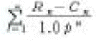
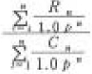
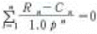
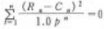
(정답률: 58%)
46. 해마다 연말에 간벌 수입으로 1,500,000원씩 수입이 되는 임분을 가지고 있을 때, 이 임분의 자본가는 얼마인가?(단, 이율은 5%이다.)
- 750000원
- 20000000원
- 25000000원
- 30000000원
(정답률: 66%)
47. 자연휴양림의 공급측면에서의 입지조건은 어느 것인가?
- 접근이 용이하여 수요에 대응되는 곳
- 사회경제적 레크레이션 수요에 적당한 곳
- 풍치적 시업을 하여 자연휴양적 이용이 가능한 곳
- 배후도시상황, 거주인구, 기존시설 등 수요에 대응 되는 곳
(정답률: 62%)
48. 어느 법정림의 춘계축적이 1000m3, 추계축적이 1200m3라 할 때 이 산림의 법정축적은 몇 m3인가?
- 1000
- 1100
- 1200
- 2200
(정답률: 70%)
49. 야외 휴양의 특징으로 가장 적합한 것은?
- 야외 휴양은 숲에서만 이루어진다.
- 야외 휴양은 선택이 자유롭지 못하다.
- 야외 휴양은 노동과 관련되어 수행된다.
- 야외 휴양은 재충전의 편익을 가져다 준다.
(정답률: 78%)
50. 임가소득에 대한 설명으로 맞는 것은?
- 임업조수익에서 임업경영비를 뺀 나머지이다.
- 임업경영의 결과에 의하여 직접적으로 얻는 소득이다.
- 그 크기는 임업경영의 성과를 나타내는 가장 정확한 지표가 된다.
- 어떠한 임가의 전체 소득수준과 임업의 상대적 중요성을 알 수 있다.
(정답률: 51%)
51. 임업소득의 계산방법 중 관계가 옳은 것은?
- 임지에 귀속하는 소득 = 임업소득 - ( 지대 + 가족노임추정액 )
- 자본에 귀속하는 소득 = 임업소득 - ( 지대 + 자본이자 )
- 경영관리에 귀속하는 소득 = 임업순수익 - (지대 + 자본이자)
- 가족노동에 귀속하는 소득 = 임업소득 - (자본이자 + 가족노임추정액)
(정답률: 50%)
52. 이용객이 일으키는 문제와 이에 대한 일반적인 관리 대응 방법으로 가장 적절한 것은?
- 조심스러운 이용에도 발생하는 훼손은 설득과 규칙을 적용한다.
- 야생 동ㆍ식물 절취 등의 불법적인 행동에 대해서는 법규에 따라 처벌한다.
- 야영의 흔적을 남기는 등의 미숙련에 의한 행동에 대해서는 교육 및 정보를 제공한다.
- 야영행위에 있어서의 오염과 소음을 야기시키는 부주의한 행동에 대해서는 법규에 따라 처벌한다.
(정답률: 67%)
53. 벌채목의 길이가 20m, 원구단면적이 0.5m2이고, 말구단면적이 0.3m2일 경우에 스말리안식에 의해서 재적을 구하면 얼마인가?
- 6m3
- 7m3
- 8m3
- 9m3
(정답률: 64%)
54. 자연휴양림의 공익적 효용 중에서 직접효과에 속하는 것은?
- 재해방지의 효용
- 공해 완화의 효용
- 기상환경 완화의 효용
- 인간성 육성 및 정서함양
(정답률: 67%)
55. 현재 15년생의 소나무림 1ha가 있다. 이에 투자한 조림비와 기타 경비가 10년생까지 투입된 후가합계가 60만원, 30년생의 벌기수확이 460만원이라고 하면, 글라저의 보상식에 따른 15년생 현재의 평가대상임목가는?
- 500000원
- 650000원
- 700000원
- 850000원
(정답률: 38%)
56. 순현재가를 영(0)이 되게 하는 이자율의 크기로 투자효율을 평가하는 것은?
- 회수기간법
- 투자이익율법
- 수익 ㆍ 비용율법
- 내부투자수익율법
(정답률: 59%)
57. 자연휴양림의 지정권자는?
- 농림수산식품부장관
- 지방산림관리청장
- 시장, 군수
- 산림청장
(정답률: 74%)
58. 사유림의 경영주체에서 농가임업경영의 설명으로 가장 알맞은 것은?
- 농가에서 임업을 아울러 경영할 수 있는 규모의 산림경영
- 약 5-30ha 규모의 산림경영형태로 평균면적은 약 10ha인 산림경영
- 농업 ㆍ 목축업등의 1차 산업과 임업을 같은 비중으로 다룰 수 있는 산림경영
- 목재생산보다는 조상의묘를 모시거나 연료 ㆍ 농용재등의 수득을 얻기 위하여 보유하고 있는 산림경영
(정답률: 54%)
59. 산림의 경영분석에 있어서 손익분기점의 전제 및 내용으로 틀린 것은?
- 제품의 생산능률은 다양하다.
- 원가는 고정비와 변동비로 구분할 수 있다.
- 고정비는 생산량의 증강에 관계없이 항상 일정하다.
- 생산량과 판매량은 항상 같으며, 생산과 판매에 동시성이 있다.
(정답률: 66%)
60. 공ㆍ사유림 산림경영계획을 작성하기 위해 임황조사를 실시하고자 한다. 임황조사 항목이 아닌 것은?
- 수종
- 지위
- 임령
- 총축적
(정답률: 69%)
4과목: 임도공학
61. 임도 노면을 유지 보수하는데 틀린 작업인 것은?
- 노면보다 낮은 길어깨는 채우고 다져서 노면보다 높인다.
- 노면고르기는 노면이 습윤상태일 때 한다.
- 노체의 지지력이 약화될 때 자갈이나 쇄석 등을 깐다.
- 강우 직후나 해빙기 후에는 노면 보호를 위해 통행을 규제한다.
(정답률: 57%)
62. 그림과 같은 도형의 재적을 절고법으로 구한 값은?
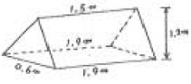
- 0.936m3
- 0.836m3
- 0.736m3
- 0.636m3
(정답률: 37%)
63. 산림관련 규정상 간선임도 ㆍ 지선임도의 유효나비는 길어깨, 옆도랑을 제외할 경우 몇 m를 기준으로 하는가?
- 1.8
- 2.5
- 3
- 4
(정답률: 73%)
64. 간선임도, 지선임도의 시설기준에서 정한 곡선반지름의 규격은 내각이 얼마 이상이 되는 곳에 곡선 설치를 하지 않아도 되는가?
- 100°
- 120°
- 155°
- 200°
(정답률: 77%)
65. 일반적으로 차량이 곡선부를 통과할 때 옆미끄러짐이 없도록 외쪽물매를 설치하는데 이때 차량속도 30km/h, 곡선반지름 30m, 노면과 타이어간 마찰계수 0.2로 하면 외쪽물매는 얼마가 적당한가?
- 2.4%
- 3.6%
- 4.0%
- 4.3%
(정답률: 58%)
66. Awl점의 지반고가 19.5m, B지점의 지반고가 23.5m이고 2점의 수평거리가 40m일 때 2점간의 20m높이의 등고선이 지나가는 위치를 구하면?
- 3m
- 5m
- 7m
- 10m
(정답률: 59%)
67. 임도개설효과를 직접효과, 간접효과, 파급효과로 구분했을 때 직접효과로 볼 수 있는 것은?
- 벌채비의 절감
- 산촌의 생활수준 향상
- 토지이용의 개선과 지가의 상승
- 생산계획 등의 사업기간 단축
(정답률: 56%)
68. 임도의 평면선형으로 잘 사용되고 있지 않은 곡선은?
- 단곡선
- 배향곡선
- 반향곡선
- 포물선곡선
(정답률: 70%)
69. 기계톱을 사용하여 입목을 벌도할 때 수구의 적당한 각도는 어느 정도인가?
- 10 - 15°
- 20 - 30°
- 30 - 45°
- 50 - 60°
(정답률: 65%)
70. 일반지형에서 설계속도가 30km/시간 일 때 임도에서 사용할 수 있는 최소곡선반지름의 기준은?
- 60m
- 40m
- 30m
- 15m
(정답률: 66%)
71. 임도시공 작업의 하나인 벌개제근의 설명으로 틀린 것은?
- 벌개제근을 완전히 하지 않으면 나무사이의 공극에 토사가 잘 들어가지 않고 또 부식으로 인한 공극이 발생하여 성토부가 침하하는 원인이 되기도 한다.
- 표토, 즉 부식토가 되는 표층과 그 아래 풍화층은 장래의 침하나 활동의 원인이 되기에 성토 재료로써 부적합하므로 걷어내야 한다.
- 벌개제근이란 임도 용지내에 서있는 나무뿌리 잡초 등을 제거하는 작업으로 잘취부에 벌개제근을 할 경우에는 시공 효율을 높일 수 있다.
- 벌개제근된 임목은 흙으로 덮고, 성토부는 제근을 하지 않는 것이 좋다.
(정답률: 63%)
72. 임도의 주된 역할 및 효용으로 볼 수 없는 것은?
- 지역진흥
- 미적 경관의 증진
- 임업 ° 임산업의 진흥
- 산림의 공익적 기능의 고도 발휘
(정답률: 77%)
73. 보통 포틀랜드시멘트에 대한 설명으로 틀린 것은?
- 수경성이며 강도가 크다.
- 비중은 대체로 2.50 - 2.65이다
- 시멘트의 단위용적중량은 보통 1500kg/m3을 표준으로 한다.
- 토모그 건축의 구조물, 콘크리트제품 등 다방면에 이용된다.
(정답률: 58%)
74. 임도에서 흙깍기 비탈면 돌림수로에 대해 옳게 설명한 것은?
- 강우시 비탈면의 자하수 분출로 인한 비탈면보호를 위해 설치한다.
- 홍수시 출수를 유하시키기 위해 콘크리트로 포장한다.
- 속도랑과 겉도랑을 설치한다.
- 비탈어깨부위와 원래 자연비탈면의 경계부위의 적당한 곳에 설치한다.
(정답률: 58%)
75. 평판측량시 방향오차는 주로 무엇 때문에 발생하는 오차인가?
- 치심
- 정치
- 이심
- 표정
(정답률: 50%)
76. 임도에서 합성물매와 관련이 있는 조항은 어느 것인가?
- 종단물매, 횡단물매
- 종단물매, 역물매
- 편물매, 곡선반지름
- 횡단물매, 편물매
(정답률: 72%)
77. 임도설계를 할 경우에 유의하여야 할 사항과 일반적으로 거리가 먼 것은?
- 임도의 이용이 편리하여 임산물의 반출을 유리하게 할 수 있도록 한다.
- 공사의 시공이 용이하여야 하지만 공사비는 적게 들지 않아도 된다.
- 공사의 시공 후 유지비가 적게 들도록 한다.
- 산림의 공익적 기능의 유지를 도모하도록 한다.
(정답률: 75%)
78. 콘크리트블록흙막이공법에서 콘크리트블록은 1m2당 몇 kg의 것이 일반적으로 사용되고 있는가?
- 100 - 200 kg
- 200 - 300 kg
- 300 - 400 kg
- 400 - 500 kg
(정답률: 54%)
79. 물매가 급하고 지하수가 용출되는 연약한 지층구조로 이뤄진 비탈면을 안정시키는 안정공법으로 가장 바람직한 공법은?
- 바자얽기공법
- 비탈힘줄박기공법
- 낙석방지망덮기공법
- 비탈선떼붙이기공법
(정답률: 63%)
80. AB 측선의 거리가 100m, 방위각이 135°일 때 위거 및 경거는?
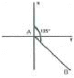
- 위거 = -70.71m, 경거 = 70.71m
- 위거 = 70.71m, 경거 = -70.71m
- 위거 = -86.60m, 경거 = 86.60m
- 위거 = 86.60m, 경거 = -86.60m
(정답률: 55%)
5과목: 사방공학
81. 사다리꼴 수로 횡단면의 밑나비를 b, 깊이를 t, did 측면의 경사각을 φ라 할 때 윤변(p)은 어떤 식으로 표시 되는가?
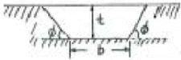
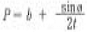
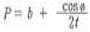
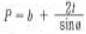
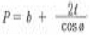
(정답률: 47%)
82. 사방댐에서 물밭이와 물방석에 대한 설명 중 틀린 것은?
- 물받이 공사는 계상위에 유수, 석력, 유목 등의 낙하로 인한 제각 및 반수면 부위 계상의 세굴을 방지할 목적으로 시공한다.
- 물방석은 본댐과 앞댐 사이에 설치하므로써 낙수의 충격력을 약화시키고 세굴을 방지할 목적으로 시공한다.
- 물받이공사는 호박돌이나 암석 등이 유하하는 경우에는 물받침이 파괴되므로 이 경우 말방석을 만들거나 앞댐을 계획한다.
- 물방석은 앞댐이 본댐의 높이보다 낮은 경우, 유동사력의 지름이 작은 경우 및 유량이 많은 경우에 설치한다.
(정답률: 55%)
83. 산지에서 침식이 발생하여 사방사업을 필요로 하는 침식은?
- 자연침식
- 지질학적 침식
- 이상침식
- 정상침식
(정답률: 54%)
84. 수제공 방법에 따른 특징을 잘못 설명한 것은?
- 직각 수제공은 편류를 일으키지 않는다.
- 하향 수제공은 계안을 향하여 편류한다.
- 상향 수제공은 계류의 중심을 향하여 편류한다.
- 직선 수제공은 양안을 향하여 엇갈리게 설치한다.
(정답률: 44%)
85. 과거 우리나라 산림황폐의 요인 중 관계가 먼 것은?
- 산지사방의 실패
- 낙엽채취의 계속
- 산림병충해 및 산불피해
- 이조시대부터 6.25사변 등 사회적 혼란기에 자형된 도남벌
(정답률: 66%)
86. 개수로에서 물의 흐름을 직각으로 자른 횡단면적을 무엇이라 하는가?
- 윤변
- 경심
- 유적
- 유량
(정답률: 56%)
87. 계상에서 침식을 일으키지 않는 경우의 최대유속은?
- 야계유속
- 임계유속
- 수면유속
- 하상유속
(정답률: 70%)
88. 돌을 쌓아 올릴 때 모르타르를 사용하지 않고 쌓는 방법은?
- 찰쌓기
- 메쌓기
- 보쌓기
- 잡쌓기
(정답률: 70%)
89. 임내강우량의 구성요소가 아닌 것은?
- 수관차단우량
- 수관통과우량
- 수관적하우량
- 수간유하우량
(정답률: 61%)
90. 산사태와 산붕에 대한 설명으로 틀린 것은?
- 산붕은 산사태와 같은 기구로 발생되지만 일반적으로 산사태보다 규모가 크고 산정부에서 많이 발생한다.
- 산사태는 주로 호우의 원인에 의하여 산정에서 가까운 산복부에서 발생한다.
- 산사태는 지괴가 융해, 팽창되어 일시에 계곡, 계류를 향하여 연속적으로 길게 붕괴하는 것이다.
- 산사태는 비교적 산지 경사가 급하고 토층 바닥에 양변이 깔린 곳에 많이 발생한다.
(정답률: 63%)
91. 해안사구 중에서 해안에 가장 멀리 떨어져 조성되어 있는 사구는?
- 후사구
- 자연사구
- 주사구
- 전사구
(정답률: 54%)
92. 산사태 발생의 인위적인 발생 인자가 아닌 것은?
- 지표수에 의한 침식
- 토목구조물 설치
- 수목의 벌채
- 저수지의 수위변동
(정답률: 65%)
93. 절토사면의 토질별 적용공법으로 가장 적합하게 연결된 것은?
- 모래층 비탈면 - 격자틀붙이기공법
- 점질성 비탈면 - 분사파종공법
- 경암 비탈면 - 전면식생공법
- 사질토 비탈면 - 새집붙이기공법
(정답률: 51%)
94. 선떼붙이기공작물에 있어서 선떼 2매와 1매의 갓떼 또는 바닥떼를 사용하는 것은 몇 급인가?
- 4급
- 5급
- 6급
- 7급
(정답률: 62%)
95. 돌골막이를 측설할시에 적절한 높이는?
- 2 m 이내
- 3 m 이내
- 4 - 5 m 이내
- 5 m 이상
(정답률: 39%)
96. 비탈다듬기공사에서 상단의 단면적이 20m2, 하단의 단면적이 30m2이고 상하단의 거리가 10m 일 때 평균단면적법으로 토사량을 구하면?
- 100m3
- 150m3
- 200m3
- 250m3
(정답률: 56%)
97. 산복수로에서 쌓기공작물의 높이가 3m 이고, 수로깊이가 1m 일 때 수로받이의 근사적 길이는?
- 2.0 - 3.0m
- 4.0 - 5.0m
- 6.0 - 8.0m
- 9.0 - 10.0m
(정답률: 52%)
98. 산복공사에서 땅속흙막이의 설명이 옳은 것은?
- 누구침식 발달을 방지하기 위해서 시공
- 산복에 내리는 빗물에 의한 침식을 방지하기 위한 시공
- 비탈다듬기로 생긴 토사의 활동을 방지하기 위한 시공
- 산복면의 여러 가지 계단공사를 하기 위한 시공
(정답률: 69%)
99. 사방댐의 적지로 적합하지 않은 곳은?
- 댐자리는 좁고, 상류부가 광대한 장소
- 상류 계상 비탈이 완만한 장소
- 계상 및 영안에 암반이 있는 장소
- 산각이 붕괴하여 공작물이 없어 토사유출이 심한 장소
(정답률: 44%)
100. 사방공작물 중에서 주로 야계의 활침식을 방지하기 위해 축설하는 공작물은?
- 야계둑
- 기슭막이
- 바닥막이
- 수로공
(정답률: 63%)